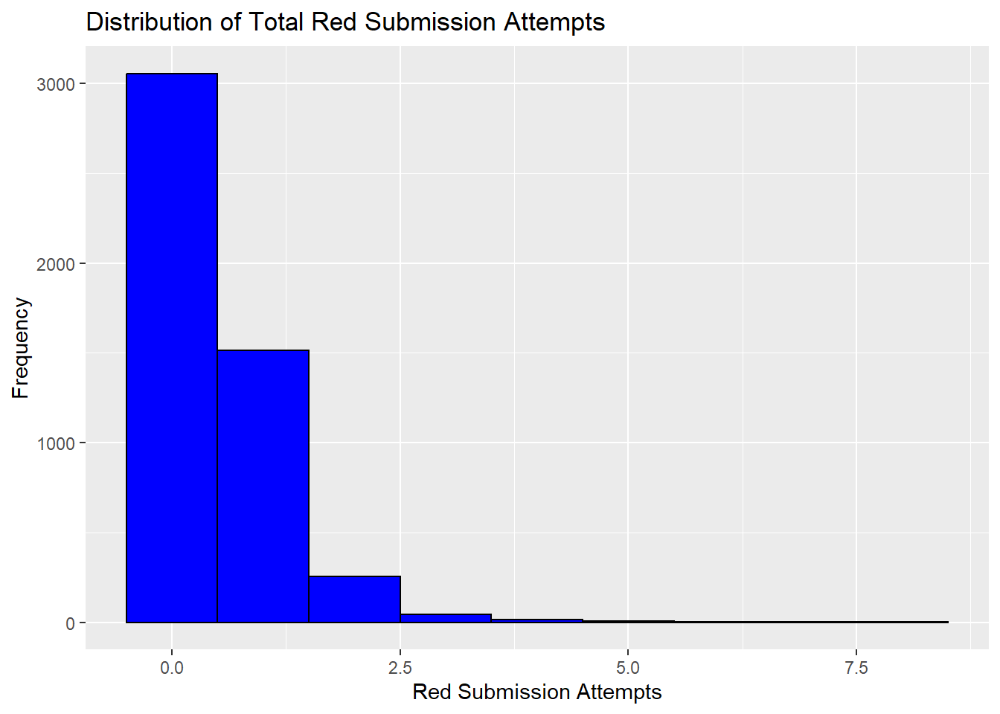
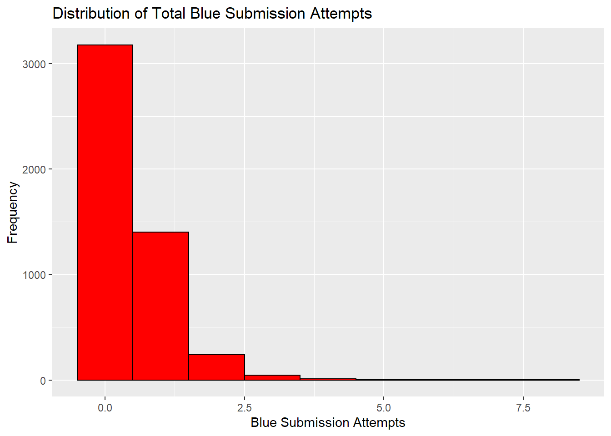
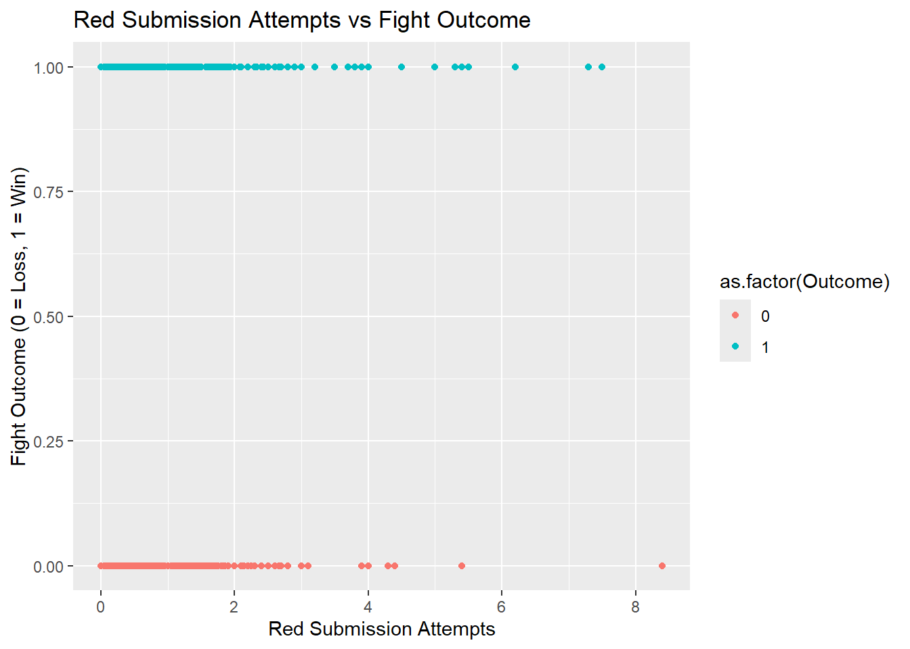
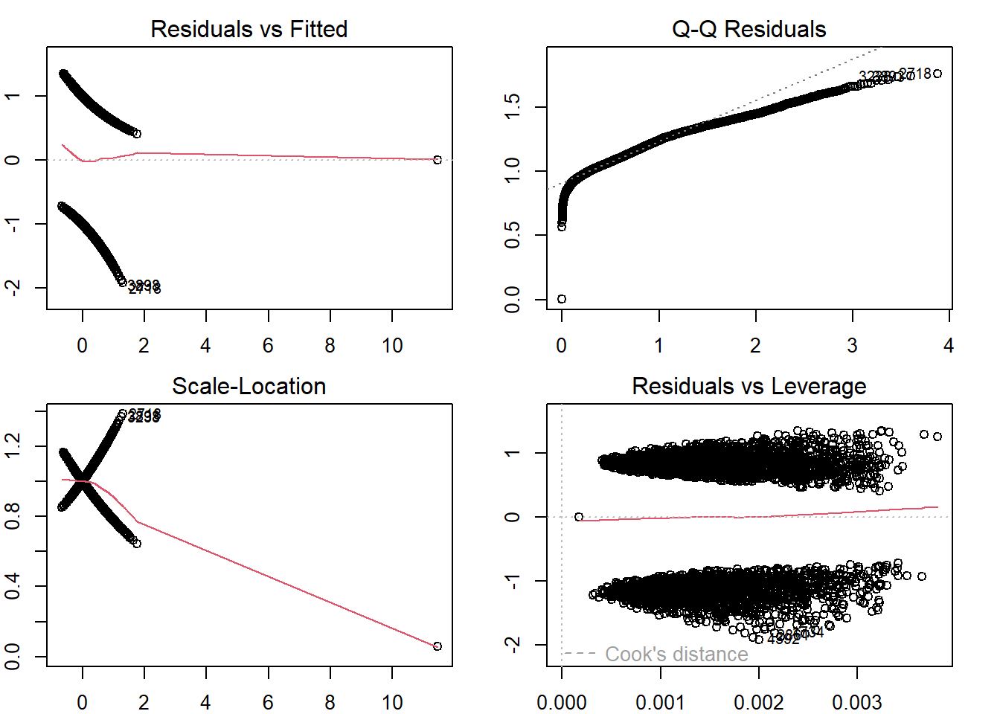

── Attaching core tidyverse packages ──────────────────────── tidyverse 2.0.0 ──
✔ dplyr 1.1.4 ✔ readr 2.1.5
✔ forcats 1.0.0 ✔ stringr 1.5.1
✔ ggplot2 3.5.1 ✔ tibble 3.2.1
✔ lubridate 1.9.3 ✔ tidyr 1.3.1
✔ purrr 1.0.2
── Conflicts ────────────────────────────────────────── tidyverse_conflicts() ──
✖ dplyr::filter() masks stats::filter()
✖ dplyr::lag() masks stats::lag()
ℹ Use the conflicted package (<http://conflicted.r-lib.org/>) to force all conflicts to become errors
library(dplyr)library(broom)library(car) # For VIF calculation
Loading required package: carData
Attaching package: 'car'
The following object is masked from 'package:dplyr':
recode
The following object is masked from 'package:purrr':
some
# Data cleaningufc_data <- ufc_data %>%mutate(Outcome =ifelse(Winner =="Red", 1, 0), # Binary outcome: 1 for Red win, 0 for Blue winWeightClass =as.factor(WeightClass),TotalRedSubAttempts = RedAvgSubAtt, # Red's submission attemptsTotalBlueSubAttempts = BlueAvgSubAtt ) %>%filter(!is.na(Outcome), !is.na(TotalRedSubAttempts), !is.na(TotalBlueSubAttempts),!is.na(BlueReachCms), !is.na(RedReachCms), !is.na(BlueAvgSigStrLanded), !is.na(RedAvgSigStrLanded),!is.na(TotalFightTimeSecs),!is.na(WeightClass) ) %>%mutate(LogRedSubAttempts =log1p(TotalRedSubAttempts),LogBlueSubAttempts =log1p(TotalBlueSubAttempts),LogBlueReach =log1p(BlueReachCms),LogRedReach =log1p(RedReachCms),LogBlueSigStr =log1p(BlueAvgSigStrLanded),LogRedSigStr =log1p(RedAvgSigStrLanded),LogFightTime =log1p(TotalFightTimeSecs) )# Check dimensions of the cleaned datasetdim(ufc_data)
[1] 4895 128
Step 2: Exploratory Data Analysis (EDA)
# Summary statistics for numerical variablessummary_stats <- ufc_data %>%summarise(across(where(is.numeric), list(mean = mean, sd = sd, median = median, min = min, max = max), na.rm =TRUE)) %>%pivot_longer(cols =everything(), names_to =c("Variable", ".value"), names_sep ="_")
Warning: There was 1 warning in `summarise()`.
ℹ In argument: `across(...)`.
Caused by warning:
! The `...` argument of `across()` is deprecated as of dplyr 1.1.0.
Supply arguments directly to `.fns` through an anonymous function instead.
# Previously
across(a:b, mean, na.rm = TRUE)
# Now
across(a:b, \(x) mean(x, na.rm = TRUE))
print("Summary statistics for numerical variables:")
# Plot distributions of key numeric variablesggplot(ufc_data, aes(x = TotalRedSubAttempts)) +geom_histogram(binwidth =1, fill ='blue', color ='black') +labs(title ="Distribution of Total Red Submission Attempts", x ="Red Submission Attempts", y ="Frequency")

ggplot(ufc_data, aes(x = TotalBlueSubAttempts)) +geom_histogram(binwidth =1, fill ='red', color ='black') +labs(title ="Distribution of Total Blue Submission Attempts", x ="Blue Submission Attempts", y ="Frequency")

# Relationship between submission attempts and fight outcomeggplot(ufc_data, aes(x = TotalRedSubAttempts, y = Outcome, color =as.factor(Outcome))) +geom_point() +labs(title ="Red Submission Attempts vs Fight Outcome", x ="Red Submission Attempts", y ="Fight Outcome (0 = Loss, 1 = Win)")

ggplot(ufc_data, aes(x = TotalBlueSubAttempts, y = Outcome, color =as.factor(Outcome))) +geom_point() +labs(title ="Blue Submission Attempts vs Fight Outcome", x ="Blue Submission Attempts", y ="Fight Outcome (0 = Loss, 1 = Win)")
Call:
glm(formula = Outcome ~ LogRedSubAttempts + LogBlueSubAttempts +
LogBlueReach + LogRedReach + LogBlueSigStr + LogRedSigStr,
family = binomial, data = ufc_data_filtered)
Coefficients:
Estimate Std. Error z value Pr(>|z|)
(Intercept) 0.68061 2.87556 0.237 0.812897
LogRedSubAttempts 0.43736 0.09732 4.494 6.98e-06 ***
LogBlueSubAttempts -0.34346 0.09384 -3.660 0.000252 ***
LogBlueReach -2.10785 0.76588 -2.752 0.005920 **
LogRedReach 2.03037 0.74314 2.732 0.006292 **
LogBlueSigStr -0.46782 0.05704 -8.201 2.37e-16 ***
LogRedSigStr 0.46156 0.05861 7.876 3.39e-15 ***
---
Signif. codes: 0 '***' 0.001 '**' 0.01 '*' 0.05 '.' 0.1 ' ' 1
(Dispersion parameter for binomial family taken to be 1)
Null deviance: 6324.0 on 4643 degrees of freedom
Residual deviance: 6221.7 on 4637 degrees of freedom
AIC: 6235.7
Number of Fisher Scoring iterations: 4
par(mfrow=c(2,2), mar =c(2,2,2,2))plot(final_model)

Interpretation of the Logistic Regression Results
Intercept (0.68061, p = 0.8129):
The intercept represents the log-odds of a fight outcome (Red win) when all independent variables are at their baseline (log-transformed value of 0). However, the intercept is not statistically significant, indicating it does not add meaningful information about the outcome on its own.
LogRedSubAttempts (Estimate = 0.43736, p < 0.001):
A unit increase in the log-transformed submission attempts by the Red fighter increases the log-odds of Red winning by 0.437, holding all other variables constant. This is statistically significant and suggests that higher submission attempts by the Red fighter are associated with a higher probability of winning.
LogBlueSubAttempts (Estimate = -0.34346, p < 0.001):
A unit increase in the log-transformed submission attempts by the Blue fighter decreases the log-odds of Red winning by 0.343, holding other variables constant. This indicates that more submission attempts by Blue correlate negatively with Red’s chances of winning.
LogBlueReach (-2.10785, p < 0.01) and LogRedReach (2.03037, p < 0.01):
- A unit increase in Blue's reach reduces the log-odds of Red winning by 2.11, while a similar increase in Red's reach increases the log-odds by 2.03.
- Both variables are statistically significant, indicating reach plays an important role in fight outcomes.
LogBlueSigStr (-0.46782, p < 0.001) and LogRedSigStr (0.46156, p < 0.001):
- A unit increase in Blue's log-transformed significant strikes landed reduces the log-odds of Red winning by 0.468.
- Similarly, an increase in Red's significant strikes landed improves their chances of winning (log-odds increase by 0.462).
- These findings align with the intuition that significant strikes are strongly correlated with a fighter's performance.
Model Performance (Residual Deviance and AIC):
- The residual deviance (6221.7) is lower than the null deviance (6324.0), suggesting the model explains some variability in the outcome.
- The AIC (6235.7) provides a metric for model comparison, with lower values indicating better fit.
Relationship to the Research Question
The research question asked whether fight outcomes are associated with the number of submission attempts made by a fighter. The findings clearly show that submission attempts by both the Red and Blue fighters significantly affect the fight outcome.
Positive Impact of Red Submission Attempts: The more submission attempts the Red fighter makes, the higher their chances of winning.
Negative Impact of Blue Submission Attempts: Conversely, Blue’s submission attempts lower the probability of a Red win, reinforcing the competitive nature of the fight.
These results support the hypothesis that submission attempts are indeed a critical factor influencing fight outcomes. However, other variables such as reach and significant strikes also play substantial roles, suggesting that submission attempts should be considered within the broader context of fight strategy and performance metrics.